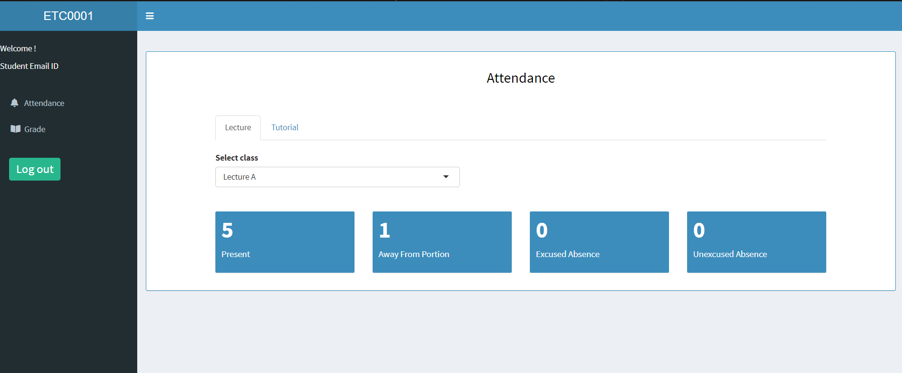
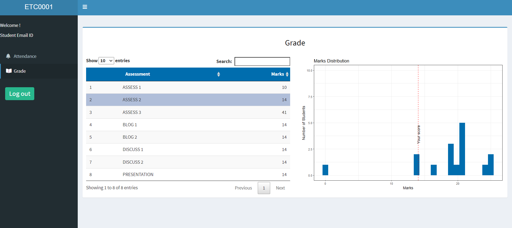
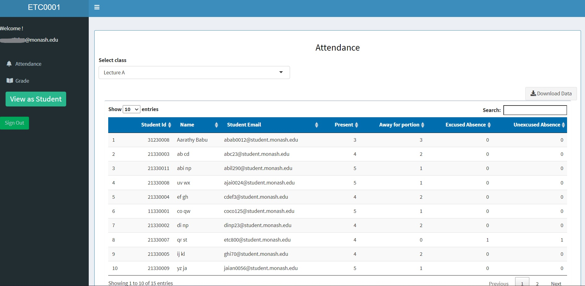
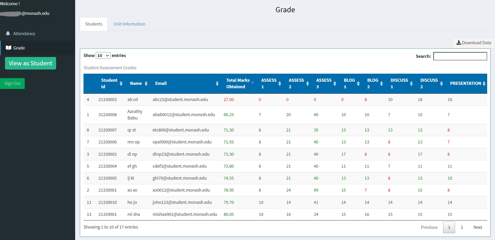
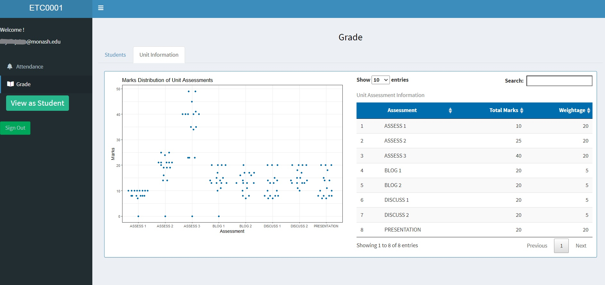

Shiny Unit Grade and Attendance Reviewer, or SUGAR, is a shiny web app that allows students to see their grade and attendance of a unit.
Install the package from GitHub with:
# install.packages("devtools")
devtools::install_github("numbats/sugar")The R shiny application is accessible to both students and teaching staff to view the attendance and assessment grades of the students enrolled in a unit.
The student view consists of two tabs, Attendance and Grade.

The tab shows the marks scored by the student in each assessment and the corresponding performance of the class for that assessment, however the class performance is only shown to the students if the class strength is above 15 students.

The attendance tab contains the attendance of the students enrolled in the unit which can be downloaded as a .CSV file.

The grade tab shows the grades of each student color coded according to the pass marks. Like attendance, grades of students can also be downloaded as a .CSV file.
 The pass marks is calculated according the unit assessment information.

The feature allows teaching staff to view the app from the student’s perspective.